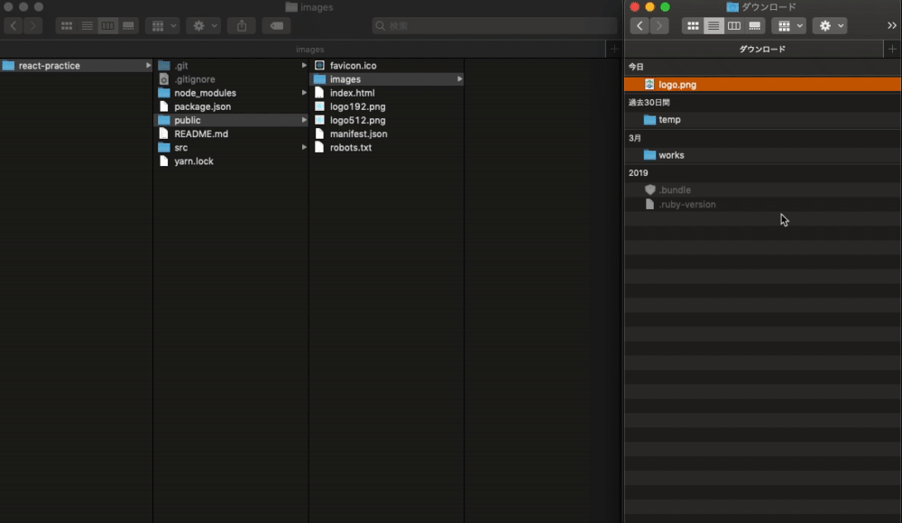

ハンズオンの流れ
- はじめに（ハンズオンの流れ）
- 座学（静的サイトジェネレータ）
- 公式サイトでテンプレを選ぼう
- gatsbyコマンドを実行しよう
- エディタで編集しよう
- ウェブに公開しよう
- まとめ
なお、本ハンズオンはこちらの事前準備を完了していることが前提になります。
完了していない方は、今回は聴講スタイルでご参加ください。
それでは進めていきましょう。
コマンドラインとは、Macではターミナルと呼ばれ、Windowsではパワーシェルと呼ばれる「コマンド（パソコンへの命令）を出すソフト」のことでした。
Windowsの方のみパワーシェルで実行するコマンド１つ
npm install -g npx
WindowsもMacもLinuxも全ての方が実行するコマンド３つ
npm install create-react-app
npx create-react-app react-practice
cd react-practice

開けたら、編集を始める前にReactアプリの中身について確認しておきます。次に進みましょう。

雛形アプリの中身について
以下、簡単に説明します。
名前 | 説明 |
node_modules | このアプリが利用しているライブラリが配置される |
public | 静的サイトを公開したいときにファイルを配置する |
src | このアプリを開発するときに書くコードやプログラムを配置する |
.gitignore | リモートリポジトリにプッシュしないファイルを書く |
package.json | このアプリのライブラリや各種情報を書く |
README.md | このディレクトリのアプリの説明などを書く |
yarn.lock | このアプリの利用ライブラリの依存関係が書かれている |
現段階で完璧に理解できている必要はありません。重要なのはsrcディレクトリの中に自分で開発するコードが増えていくというイメージを持つことです。ざっと把握できたら次に進みましょう。
コマンドラインで実行
npm start
起動に成功すると、ブラウザで以下のようなデフォルトの雛形アプリを確認することができます。

それでは開発をスタートします！次へ進みましょう。
Reactアプリを開発するときに大切になるjsファイルの中身を確認し、基本的な構成要素を説明できるようになりましょう。
完成後のApp.js
import './App.css';
function App() {
const logo = '/images/logo.png';
return (
<div className="App">
<header className="App-header">
<img src={logo} className="App-logo" alt="logo" />
<br/>
<br/>
<p>
<b>フィットネス・エンジニアの勉強会</b>
</p>
<a
className="App-link"
href="https://yu-sei-m.github.io/react-hands-on"
target="_blank"
rel="noopener noreferrer"
>
はじめて学ぶReact
</a>
</header>
</div>
);
}
export default App;
以下の順番で一緒に作業を進めていきましょう。
import logo from './logo.svg'; // 削除

const logo = '/images/logo.png';
<p> <b>フィットネス・エンジニアの勉強会</b> </p>
<a className="App-link" href="https://yu-sei-m.github.io/react-hands-on" target="_blank" rel="noopener noreferrer" > はじめて学ぶReact </a>
タグの間を日本語にするだけでなく、hrefの中のURLも変更しているのでご注意ください。
変更して保存するたびにブラウザの表示が変わっていきましたね！
最終的に上の画像のようになっていたら次に進みましょう！
完成後のApp.css
.App {
text-align: center;
}
.App-logo {
height: 40vmin;
pointer-events: none;
}
@media (prefers-reduced-motion: no-preference) {
.App-logo {
animation: App-logo-spin infinite 20s linear;
}
}
.App-header {
/* background-color: #282c34; */
background-color: #fefefe;
min-height: 100vh;
display: flex;
flex-direction: column;
align-items: center;
justify-content: center;
font-size: calc(10px + 2vmin);
/* color: white; */
color: dimgrey;
}
.App-link {
/* color: #61dafb; */
color: #294b8f;
text-decoration: none;
}
@keyframes App-logo-spin {
from {
transform: rotate(0deg);
}
to {
transform: rotate(360deg);
}
}
App-headerクラスのbackground-colorの行をコメントアウトして値を「background-color: #fefefe;」を追記します。同様に、最後のカラーをコメントアウトして値を「color: dimgrey;」にしましょう。
App.cssの中のApp-headerクラスのスタイルを変更
.App-header {
/* background-color: #282c34; */
background-color: #fefefe;
/* （中略） */
/* color: white; */
color: dimgrey;
}
一行目のカラーの指定をコメントアウトして値を「color: #294b8f;」を追記します。
App.cssの中のApp-linkクラスのスタイルを変更
.App-link {
/* color: #61dafb; */
color: #294b8f;
/* 以下省略 */
}
完成後の状態
ずいぶん最終目標に近づいてきましたね！次に進みましょう。
完成後のApp.js
import './App.css';
const checkIn = () => {
var pass = prompt("パスワードを入力して下さい:","");
if (pass != null) window.location.href = "https://yu-sei-m.github.io/" + pass;
}
// function App() { // 通常の関数定義
const App = () => { // アロー関数定義
const logo = '/images/logo.png';
return (
<div className="App">
<header className="App-header">
<img src={logo} className="App-logo" alt="logo" />
<br/>
<br/>
<p>
<b>フィットネス・エンジニアの勉強会</b>
</p>
<a
className="App-link"
onClick={()=>checkIn()}
>
はじめて学ぶReact
</a>
</header>
</div>
);
}
export default App;
関数の定義方法が違うことに気づきましたか？この説明は最後に補足するので、今は「このように書いても動くんだなあ」と把握するにとどめておきましょう。
const checkIn = () => {
var pass = prompt("パスワードを入力して下さい:","");
if (pass != null) window.location.href = "https://yu-sei-m.github.io/" + pass;
}
<a
className="App-link"
onClick={()=>checkIn()}
>
はじめて学ぶReact
</a>
以下のように「はじめて学ぶReact」をクリックすると入力画面が表示されると簡易ログイン機能の完成です！
試しに「react-hands-on」と入力してみてください！
今回のハンズオン資料が表示されましたか？いいですね！もう少しで完成です！次に進みましょう。
完成後のApp.js
import './App.css';
import Link from './components/link.js'
const checkIn = () => {
var pass = prompt("パスワードを入力して下さい:","");
if (pass != null) window.location.href = "https://yu-sei-m.github.io/" + pass;
}
const App = () => {
const logo = '/images/logo.png';
return (
<div className="App">
<header className="App-header">
<img src={logo} className="App-logo" alt="logo" />
<br/>
<br/>
<p>
<b>フィットネス・エンジニアの勉強会</b>
</p>
<Link text="はじめて学ぶReact" onClick={()=>checkIn()}/>
</header>
</div>
);
}
export default App;
Mac/Win共通（ソースディレクトリ内部にコンポーネント格納用ディレクトリ作成）
cd src
mkdir components
cd components
Macのみ（リンクコンポーネントのファイル作成）
touch link.js
Winのみ（リンクコンポーネントのファイル作成）
copy nul link.js
link.js
const Link = (props) => <a
className="App-link"
onClick={props.onClick}
>
{props.text}
</a>
export default Link;
link.jsはこれでOKです。
App.js
// ２行目に追記
import Link from './components/link.js'
// 元のaタグ全体を以下に置換
<Link text="はじめて学ぶReact" onClick={()=>checkIn()}/>
完成後の見た目は変わりませんが、きちんと同じように挙動することが確認できたでしょうか？これがいわゆるコンポーネント化で、作成から読み込みまでできたことになります。ここまでできたら、次に進んでネット上に公開しましょう！
npm run-script build
このbuildコマンドを実行するとbuildディレクトリが作成されます。
buildディレクトリとは、本番環境で公開するために書き出されたウェブアプリ（ウェブサイト）のディレクトリのことです。

完成おめでとうございます！
作成したサイトが表示されましたね！お疲れ様でした！
早く終わった人は課題にも挑戦してみましょう！
Doneを押してからChallengeをクリックして「react-challenge」と入力すると課題に取り組むことができます。
以下のボタンをクリックしても開けます。
◆ ◇ ◆ ◇ ◆ ◇ ◆ ◇ ◆ ◇ ◆ ◇ ◆ ◇ ◆ ◇ ◆ ◇
完成できなかった人のための共有
ダウンロードして展開した後に以下のコマンドを実行してください。
ライブラリのインストール
npm install
ローカルサーバーの起動
npm start
作成したアプリのビルド
npm run-script build